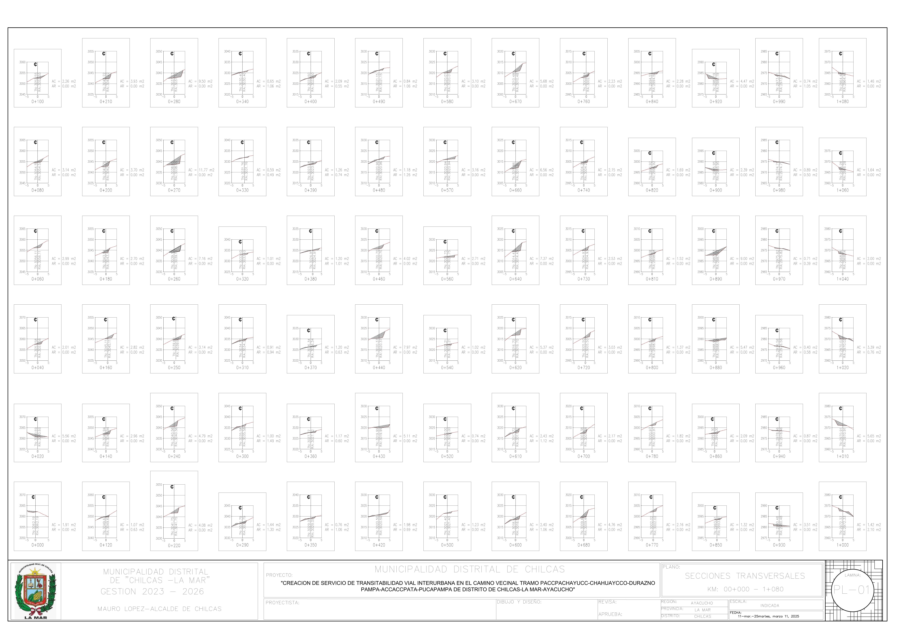
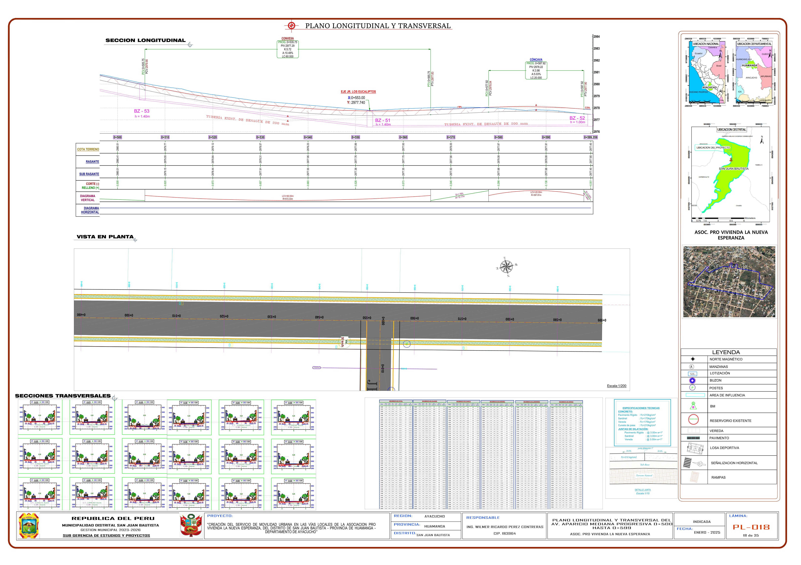
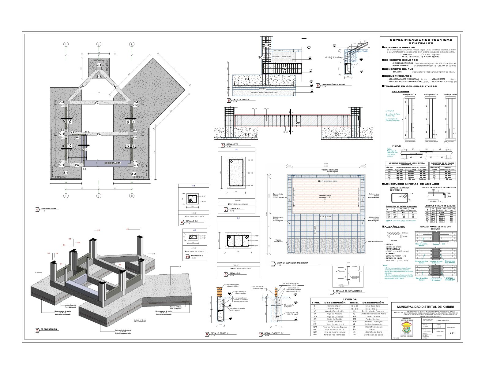
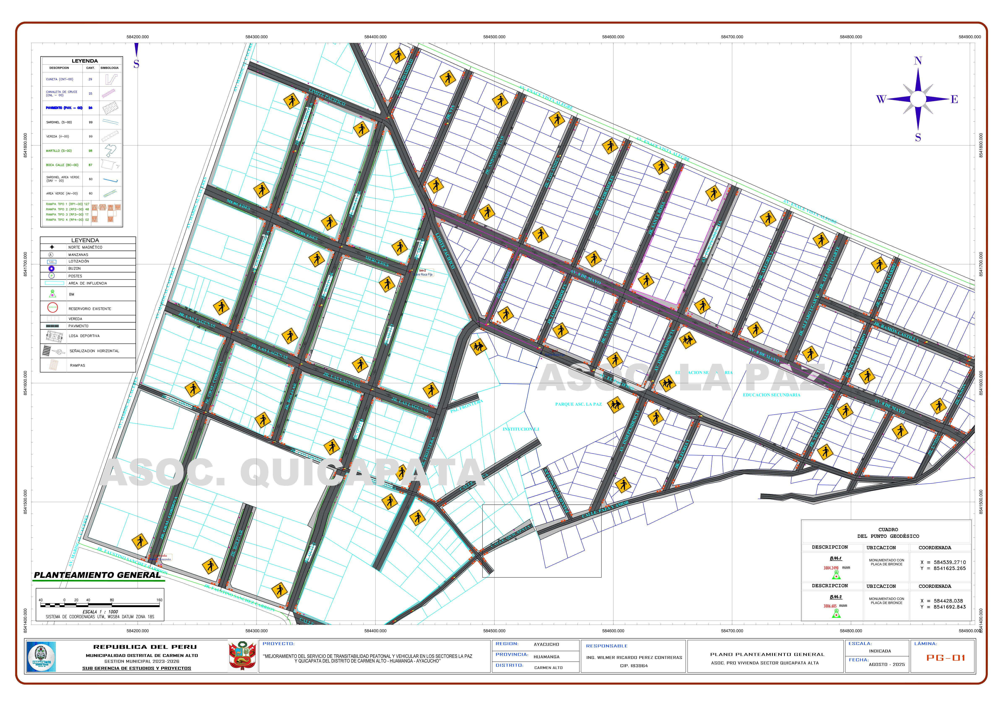

Ingeniero Civil · Proyectos viales y urbanos · Perú
Ingeniero civil con experiencia en proyectos de infraestructura vial y urbana en Ayacucho: caminos vecinales, movilidad urbana, transitabilidad peatonal y vehicular, y edificaciones institucionales. Manejo de AutoCAD Civil 3D para diseño vial, secciones transversales, metrados y elaboración de planos.
Complemento mi perfil con modelado BIM (Revit, Navisworks) y la aplicación de normativa peruana (RNE) en entornos de trabajo colaborativo, buscando optimizar los procesos de diseño y reducir errores en obra.



